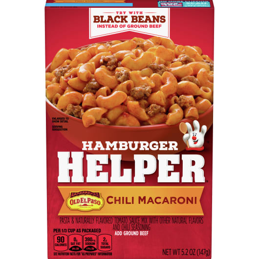

Recipe
Chile Mac

Ingriedients
- Hamburger Helper Chili MacaroniC
- 1lb Ground Beef
- 1 can Black Beans
- Purple Onion
- Jalapenos
- Mexican Shredded Cheese
Cooking Instuctions
- Brown the 1lb of Ground Beef
- Add in contents of the Hamburger Helper
- Add 1 3/4 cup of water
- Add Black Beans>
- Let the water come to a boil, lower heat to a simmer and cover. Let simmer for 8 to 10 minutes
- Cut up Onion and Jalapeno and add to the plate and top with Shredded Cheese"
Link to more recipes
Crunchwrap Recipe
Green Bean Soup